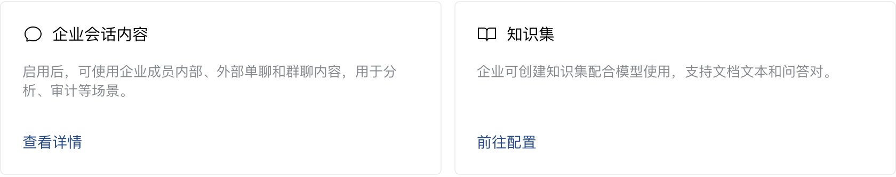
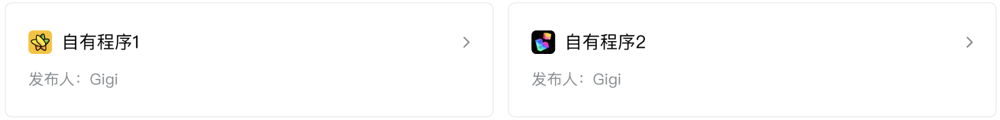
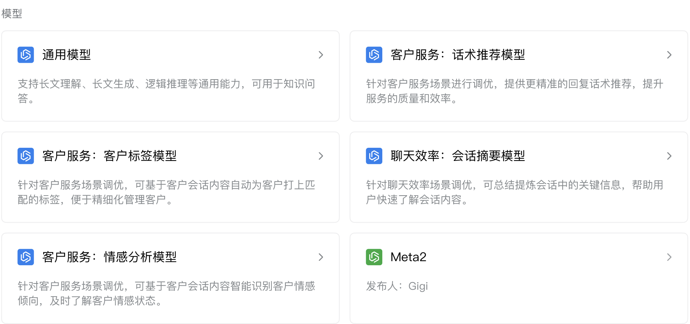

目录
专区数据专区程序专区模型专区SDK专区数据
数据与智能专区可存储企业的数据，当前支持企业会话内容数据和知识集数据，后续将根据企业的需要支持更多的数据，企业可基于专区的数据进行分析。
- 企业会话内容：包括企业成员内部、外部单聊和群聊内容以及语音通话内容，使用前企业需要先在「企业管理后台 - 安全与管理 - 管理工具 - 数据与智能专区 - 企业会话内容」启用。
- 企业知识集：为企业的知识集内容，企业可在「企业管理后台 - 安全与管理 - 管理工具 - 数据与智能专区 - 知识集」进行配置。

专区程序
企业可在专区中上传部署程序，用于分析企业数据，并将分析结果回调通知给应用。
上传程序时，需要完善以下程序信息：
- 基本信息：程序名称、程序Logo、程序描述
- 镜像文件：上传程序的镜像文件，并设置启动命令和启动参数
- 程序能力：支持添加一到多项程序能力，每项程序能力包括能力名称、能力ID、输入协议、输出协议

专区模型
企业可在专区中使用模型分析企业数据，企业微信提供了官方模型，同时也支持企业上传部署自己的模型。
上传模型时，需要完善以下模型信息：
- 基本信息：模型名称、模型Logo、模型描述、参数规模、上下文长度
- 镜像文件：上传模型的镜像文件，并设置启动命令和启动参数
- 模型能力：支持添加一到多项模型能力，每项模型能力包括能力名称、能力ID、能力用途、输入协议、输出协议

专区SDK
专区SDK提供了通用的分析接口，企业程序可直接在专区内调用专区SDK接口用以实现相应的分析功能。查看专区SDK接口